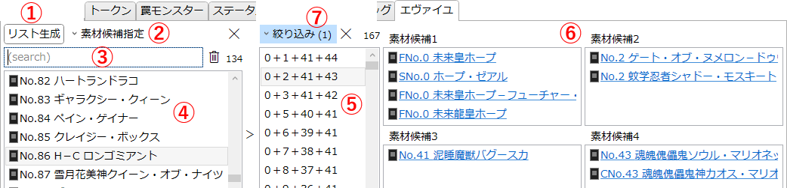
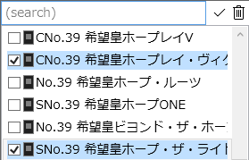
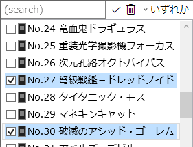
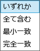

「エヴァイユ」タブ
《ナンバーズ・エヴァイユ》で特殊召喚可能な「No.」モンスターについて、その素材となる候補を調べるためのタブです。
説明

-
リスト生成
- このタブは初期状態では何も表示されていません。
- 「リスト生成」ボタンを押すと、素材候補に指定された「No.」の組み合わせによって《ナンバーズ・エヴァイユ》で特殊召喚可能なモンスターを検索します。
-
素材候補指定
- 《ナンバーズ・エヴァイユ》による特殊召喚の素材候補となるモンスターを任意の数指定します。
- 候補が1つ以上選択されている場合は背景が青くなります。
- を押すと指定を全て解除します。
-
ボタンをクリックすると以下のようなポップアップが表示されます。

-
チェックを入れることで、そのモンスターを素材候補に指定します。
- マウスボタンを押したらそのままドラッグすることで、マウスが通過したボタンを一括で設定できます。
- 最初のクリックでチェックを入れた場合はドラッグで一括チェック
- 最初のクリックでチェックを外した場合はドラッグで一括解除
-
モンスターごとにチェックできますが、検索の際に参照されるのは「No.」の数値のみです。
- 例えば《No.9 天蓋星ダイソン・スフィア》にチェックを入れて検索した場合、最終的な素材候補には《CNo.9 天蓋妖星カオス・ダイソン・スフィア》も表示されます。(逆も同様)
- 何も選択していない場合も含め、有効な候補が3つ以下の場合、全ての「No.」が素材候補になります。
-
テキストボックスに何か入力するとテキスト検索を適用します。
- テキスト内容が変更されるたびに検索結果を更新します。Enterを押す必要はありません。
- を押すと、チェックされた項目のみを表示します。
-
 を押すと、テキスト検索を解除します。
を押すと、テキスト検索を解除します。
-
チェックを入れることで、そのモンスターを素材候補に指定します。
-
サーチバー
-
テキストボックスに入力してEnterを押すと、特殊召喚候補に対してテキスト検索を適用します。
詳しくは検索ウィンドウ/文字列検索を参照してください。 -
: 絞り込みを解除します。
- サーチバーの右端には、現在そのリストに表示されている項目の数が表示されます。
-
テキストボックスに入力してEnterを押すと、特殊召喚候補に対してテキスト検索を適用します。
-
特殊召喚候補リスト
- 素材候補に指定された「No.」の組み合わせによって《ナンバーズ・エヴァイユ》で特殊召喚可能なモンスターが一覧されます。
- 項目を選ぶと、右のリストにその素材となりうる「No.」の組み合わせが一覧されます。
- Shiftキーを押しながら項目をクリックすると、山括弧《》で囲ったカード名がクリップボードにコピーされます。
-
組み合わせリスト
- 左のリストで選択されたモンスターを《ナンバーズ・エヴァイユ》で特殊召喚する際に、その素材となりうる「No.」の組み合わせが一覧されます。
- 項目を選ぶと右側にその具体的な候補となるカードを表示します。
-
素材候補リスト
- 組み合わせるそれぞれの「No.」について、その具体的な候補となるカードを表示します。
- Shiftキーを押しながら項目をクリックすると、山括弧《》で囲ったカード名がクリップボードにコピーされます。
- カード名のリンクをクリックすると、そのカードのカード情報を別ウィンドウとして開きます。
-
素材候補絞り込み
- 組み合わせリストに表示する内容を絞り込みます。
- 絞り込みが有効な場合は背景が青くなります。
- を押すと絞り込みを解除します。
- 絞り込みボタンの右には、現在そのリストに表示されている項目の数が表示されます。
-
ボタンをクリックすると以下のようなポップアップが表示されます。

-
チェックを入れることで、そのモンスターを素材候補に指定します。
- マウスボタンを押したらそのままドラッグすることで、マウスが通過したボタンを一括で設定できます。
- 最初のクリックでチェックを入れた場合はドラッグで一括チェック
- 最初のクリックでチェックを外した場合はドラッグで一括解除
-
モンスターごとにチェックできますが、絞り込みの際に参照されるのは「No.」の数値のみです。
- 何も選択していない場合は絞り込みを適用しません。
-
テキストボックスに何か入力するとテキスト検索を適用します。
- テキスト内容が変更されるたびに検索結果を更新します。Enterを押す必要はありません。
- を押すと、チェックされた項目のみを表示します。
-
を押すと、テキスト検索を解除します。
-
右端のコンボボックスで、複数の「No.」にチェックを入れた場合のマッチ方法を指定します。

- いずれか: 指定された「No.」のうち、いずれか1つ以上を含む素材候補がヒットします。
-
全て含む: 指定された「No.」を全て含む素材候補がヒットします。
- 指定された「No.」が5種類以上の場合、1つもヒットしなくなります。
-
最小一致: 指定されていない「No.」を含まないような素材候補がヒットします。
- 指定された「No.」が3種類以下の場合、1つもヒットしなくなります。
-
完全一致: 指定された「No.」と全く組み合わせの素材候補がヒットします。
- 指定された「No.」が4種類でない場合、1つもヒットしなくなります。
-
チェックを入れることで、そのモンスターを素材候補に指定します。